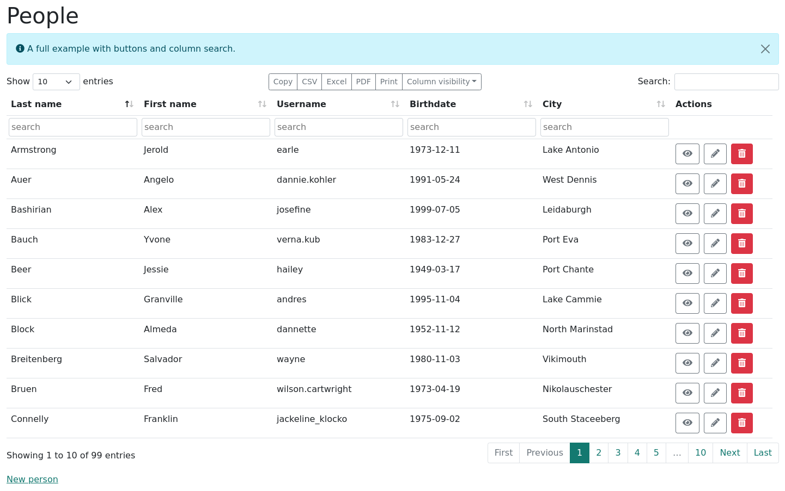
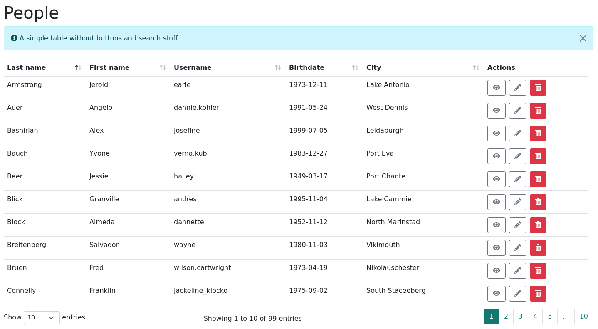
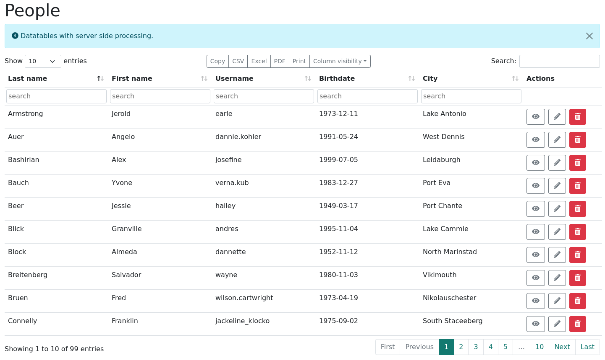

A stimulus datatables controller
-
Source Repository: https://github.com/swobspace/rails-playground
-
Datatables home page: https://datatables.net/
-
Rails Playground: used in people
The goal: use one stimulus controller for 3 scenarios:
-
datatables with html data and buttons including column visibibility and column search
-
datatables with html data and no buttons and no search
-
datatables with server side processing fetching data via ajax call
Datatables with buttons and column search

<div id="people" class="mb-3">
<div data-controller="datatables"> (1)
<table id="people_table" class="table"> (2)
<thead>
<tr>
<th>Last name</th>
<th>First name</th>
<th>Username</th>
<th>Birthdate</th>
<th>City</th>
<th class="notvisible">Active</th> (3)
<th class="notvisible">Category</th> (3)
<th class="nosort">Actions</th> (3)
</tr>
</thead>
<tfoot class="search"> (4)
<tr>
<th></th>
<th></th>
<th></th>
<th></th>
<th></th>
<th></th>
<th></th>
<th class="nosearch"></th> (5)
</tr>
</tfoot>
<tbody>
....
</tbody>
</table>
</div>
</div>| 1 | initialize the stimulus controller |
| 2 | datatables table needs always a unique id! |
| 3 | control some properties of the columns via columnDefs and use css classes for datatables targets |
| 4 | Only neccessary if you want column specific fields |
| 5 | searching some columns may not make sense (i.e. action column), supress the search field with class: nosearch |
columnDefs
Documentation: https://datatables.net/reference/option/columnDefs
columnDefs: control column behaviour through css classes
columnDefs = [ { "targets": "nosort", "orderable": false },
{ "targets": "notvisible", "visible": false } ]Simpler table without buttons and search elements

Set simpleValue to true and switch of search fields and buttons
<div id="people" class="mb-3">
<div data-controller="datatables" data-datatables-simple-value="true"> (1)
<table id="simple_people_table" class="table">
...
</table>
</div>
</div>| 1 | simpleValue controls if buttons and search fields are shown. Default: false |
| Working with stimulus controller values is explained here: https://stimulus.hotwired.dev/reference/values |
Datatables with server side processing

Set urlValue to fetch server side data
<div id="people" class="mb-3">
<div data-controller="datatables"
data-datatables-url-value="<%= remote_index_people_path(format: :json) %>"> (1)
<table id="remote_people_table" class="table">
...
</table>
</div>
</div>| 1 | set urlValue to fetch data via ajax POST method. |
| The JSON data from the url needs some datatables specific format. Have a look at https://datatables.net/examples/server_side/simple.html (tab Ajax). |
The stimulus datatables controller use the POST method.
|
Set routing constraint for json in
config/routes.rb before the common resources entrypost "people/index", to: "people#index", constraints: lambda {|req| req.format == :json}
resources :peopleCreating JSON for Datatables
I’m using a separate class PeopleDatatable (app/datatables/people_datatable.rb) to generate the JSON data and call it from my rails controller:
app/controllers/peoples_controller.rb
def index
@people = Person.includes(:category).all
respond_to do |format|
format.html
format.json { render json: PeopleDatatable.new(@people, view_context) }
end
endCSS stuff
Place the tfoot row in the table header group and do and some styling on the search input fields:
.table {
tfoot.search {
display: table-header-group;
th {
padding: 0.25rem;
input[type="text"] {
width: 100%;
padding: 0.25rem;
border-radius: 0.25rem;
box-sizing: border-box;
border: 1px solid #ced4da;
}
}
}
}